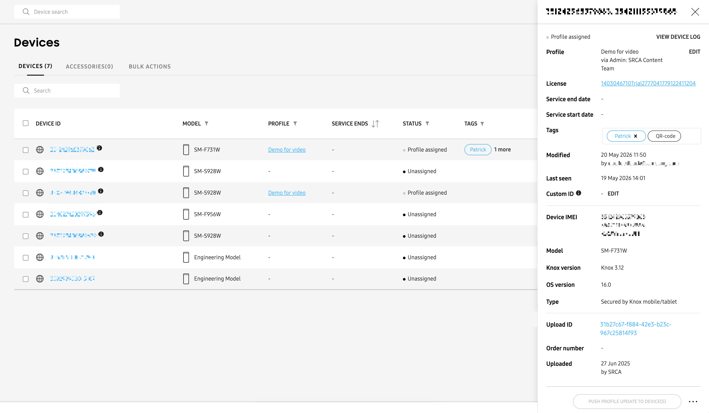
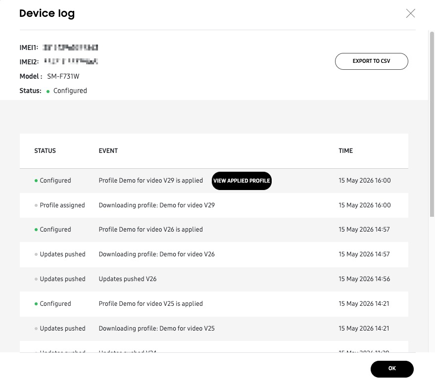
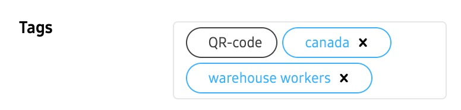
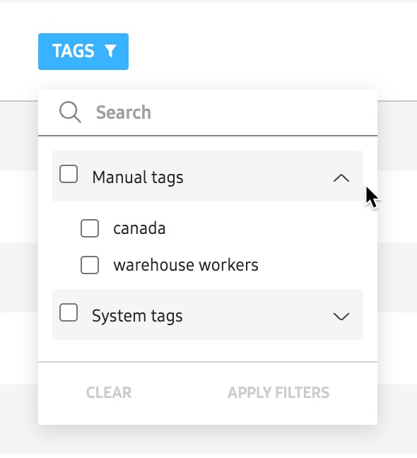

The Devices page also lists all the details about devices, such as the device ID, model, profile, and more.
The device list lists all the following information:
- Device ID — Lists the IMEI of the device.
- Model — Lists the model designation applied to the device upon assignment of the device’s profile.
- Knox version — Collected during enrollment for new devices or updated during agent update for existing devices.
- OS version — Collected during enrollment for new devices or updated during agent update for existing devices.
- Profile — Lists the name of the selected device’s assigned profile. EDIT allows you to switch profiles and licenses, but will require action on the end users device.
- Last seen — Shows the time the device last communicated with the server.
- License — Displays the license this particular device is utilizing. You can click the license name to open the license page and review license details.
- Service end date — Lists the Knox Configure service end date under the terms of the listed license and its activation date.
- Service start date — Lists the date the device was added as a Knox Configure managed device.
- Tags — Lists any existing tags applied to the selected device. Tags allow you to categorize and organize devices. If a device is an Enterprise Edition (EE) device, then an Enterprise Edition tag will display here. If required, select Add a tag to apply a new tag to this device. Admins can specify up to five separate tags for each device uploaded in a CSV file.
- Modified — Lists the time and date of when the selected device last had a configuration or profile update.
- Custom ID — ID mapped to IMEI or SN that apps deployed through Knox Configure can use to verify the device.
- Device SN — Lists the serial number for the selected device.
- Type — Lists the type of the selected device.
- Upload ID — Lists the ID for this device’s upload.
- Order number — Lists the selected device’s system assign order number and the date the order occurred.
- Uploaded — Lists the date of when the device was added as a Knox Configure managed device and who added it.
- Last seen — Denotes the most recent date the device communicated with the server, sortable by date.
You can also click the refresh icon to manually refresh the list of devices to ensure the list always displays the latest state of the devices.
This document was updated for the Knox cloud services 26.06 UAT.
On this tab
The Devices page provides details about the devices and accessories in your fleet. This page is divided into three main tabs:
- DEVICES (default tab) — Lists every mobile device (phones or tablets) uploaded to your Knox Configure account.
- ACCESSORIES — Lists every NFC-type accessory (NFC cards, Galaxy Buds cases, or Galaxy phone covers) uploaded to your Knox Configure account, along with their associated devices.
- BULK ACTIONS — Provides several actions to help you manage multiple devices at a time.
This page describes the default DEVICES tab. To learn more about the ACCESSORIES tab, see Knox Configure Accessories. To learn more about the BULK ACTIONS tab, see Bulk device actions.
DEVICES Tab
When you land on the Devices page, you’ll see the DEVICES tab by default. This tab provides the following information to help you manage your Knox Configure devices:
- Device ID — Shows the device IMEI (International Mobile Equipment Identity) number of your devices.
- Model — Shows the device model number.
- Knox version — Shows the device’s current Knox version.
- OS version — Shows the device’s current Android OS version.
- Profile — Shows the name of the device’s assigned profile. Click to get a read-only snapshot of the profile’s details.
- Last seen — Shows the date and time the device last communicated with the server.
- Service ends — Shows the date and time the Knox Service will end for this device, based on its license period.
- Status — Indicates the device’s current status in the Knox Configure service:
- Canceled by user — The device user cancelled enrollment during setup.
- Configured — The device successfully enrolled, or successfully applied a recent push update. This state also shows after a device is unlocked.
- Deactivated temporarily — The device has been temporarily deactivated by a Samsung admin.
- Error — The device encountered an error during enrollment. For more information, see Enrollment errors.
- Exchanging — The device is currently undergoing an IMEI exchange operation, usually associated with a major hardware repair or service. For example, replacement of a device’s motherboard may require the technician to flash a new IMEI number on the existing device.
- Failed — The server failed to push a profile update to the device.
- Failed to configure — The device tried to receive the profile update but failed to apply the settings.
- In progress — The server is currently performing an operation on the device, such as assigning a profile, or locking/unlocking the device.
- Locked — The device is in locked state. You can lock or unlock the device from the ACTIONS menu, or the user can input a password to unlock their device. Locked devices remain locked even after a profile is unassigned. See Perform device actions for more information about locking and unlocking a device.
- Profile assigned — A profile was assigned to the device, but the device is yet to be configured. For example, the device may not have powered on since the profile was assigned, or the device does not have an internet connection.
- Unassigned — There is no profile assigned to the device.
- Updates pushed — The server pushed a profile update to the device, but the device has not successfully applied the update yet.
- Tags — Lists any existing tags applied to the selected device. Tags allow you to categorize and organize devices. If a device is an Enterprise Edition (EE) device, then an Enterprise Edition tag will display here. If required, select Add a tag to apply a new tag to this device. You add up to 10 unique tags to a device.
- Modified — Shows the time and date of when the selected device last had a configuration or profile update.
- Custom ID — Shows a unique text string that helps to identify the device in your fleet.
View device details panel
Click any link in the DEVICE ID column to view the device details panel. This details panel provides additional information not available in the main devices table, such as the following:
- License — Displays the license this device is using. Click the license name to review its details.
- Service start date — The date that the device enrolled in Knox Configure.
- Last seen — The most recent date the device communicated with the server, sortable by date.
- Type — Shows whether the device is secured by Knox.
- Upload ID — Shows the ID associated with this device’s upload from a reseller. Click the ID to see a list of all other devices uploaded alongside this one.
- Order number — Shows the order number associated with your device’s upload from a reseller.
- Uploaded — Shows the date the device was uploaded from a reseller, as well as the reseller’s name.

From this details panel, you can take the following additional actions:
View device log
Click VIEW DEVICE LOG to see a history of changes for this device. On the Device log pop-up window, you can click EXPORT TO CSV to download an offline copy of the device log for further analysis.

Edit profile
Click EDIT next to the Profile field to change this device’s assigned profile.
Changing a profile from the device details panel will push the new configuration without requiring user consent. If you want to ask for user consent before the profile is updated, you can perform this action from the Device page’s ACTIONS menu. See Change a device’s assigned profile to learn more.
Manage tags
Click the Tags field to provide a unique text string that helps you categorize this device in the fleet. You can add up to five tags to a device, and tags can be removed at any time.

Once tags are added and saved, you can click the (filter) icon in the TAGS column to only display devices associated with that tag.

Edit Custom ID
Click EDIT next to the Custom ID field to add a unique text string that helps you identify this device in the fleet. If the device already has an existing custom ID, you can add a overwrite it by providing a new value and clicking SAVE.
The Custom ID feature only works on devices running Knox version 3.7 or above. Once you save a Custom ID to a device, the ID can’t be removed unless you perform a factory reset.
Is this page helpful?
Thank you for your feedback!